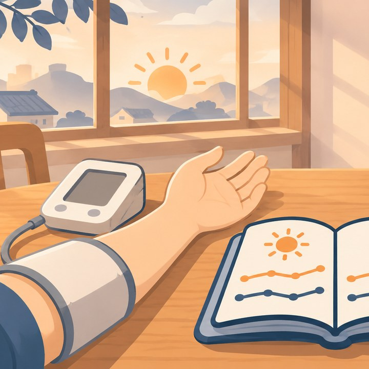

iPhone・iPad・Android の血圧と体重の手帳
朝と晩に、2回ずつ。
診察の日に、1枚で。
家で測った血圧と脈・体重を、朝の回と晩の回に分けて書きとめる手帳です。次の診察の日までの朝晩の平均と、先生に聞きたいことを、1枚の PDF にできます。記録は端末の外に送りません。
App Store・Google Play で配信予定買い切りで全部の機能が使えます。月額・アプリ内課金・広告・アカウントはありません。

こんな困りごとのために
測ったあと、すぐ入れたい
朝と晩の測る時間に開くと、その回の入力がいちばん上に出ます。1回に2つまで入れると平均を出します。
診察で見せる表がほしい
診察の日を入れておくと、前の診察から今日までの朝の平均・晩の平均と週ごとの平均を1枚に。
使わない項目がじゃま
血圧と脈のほかは、体重・体温・体脂肪率を使うものだけ選べます。
二度打ちしたくない（iPhone）
血圧計や体重計のアプリがヘルスケアに書いた値を取りこめます（読むだけ）。
勧誘や登録がいや
アカウントも、個人情報の入力もありません。広告もありません。
表計算で見たい
CSV で書き出し・読みこみができます。
できること
| 記録 | 上・下・脈・体重・体温・体脂肪率（選べる）・メモ。朝（4時〜12時）と晩（18時〜翌4時）の回ごとの平均 |
|---|---|
| 見る | 今日の朝晩・7日／28日／90日のグラフ・日ごとの一覧 |
| 診察の表 | 前の診察から今日までの日ごとの朝晩の平均・週の平均・聞きたいことのメモ・PDF で共有 |
| データ | 端末の中に保存（ゴミ箱は30日）・CSV・ヘルスケアから取りこみ（iPhone・読むだけ）・アカウントなし・通信なし |
このアプリは測る機械ではなく、手帳です。「高い」「正常」などの判定や助言は出しません。気になることは医師にご相談ください。
使い方・プライバシーポリシー・利用規約もご覧ください。